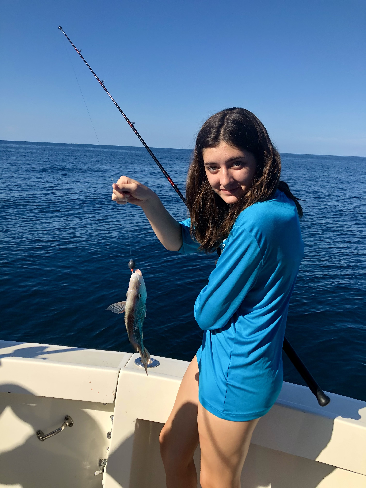
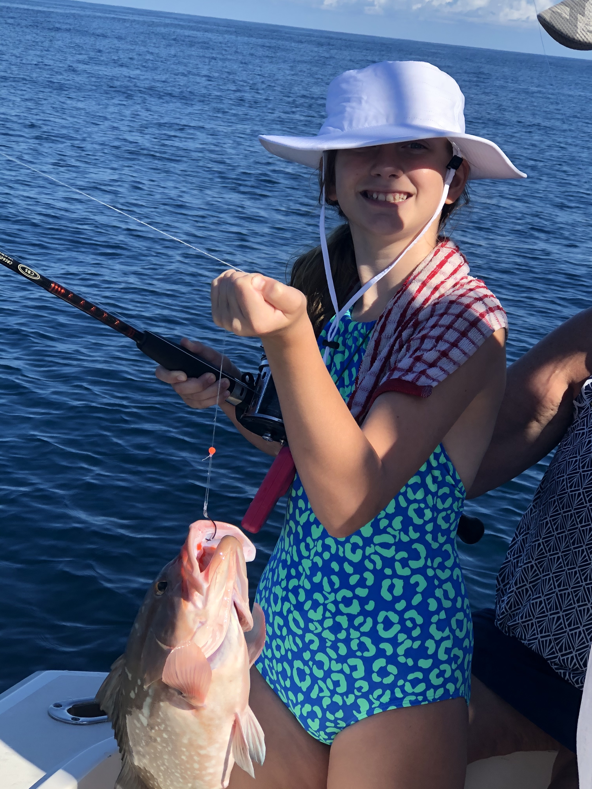
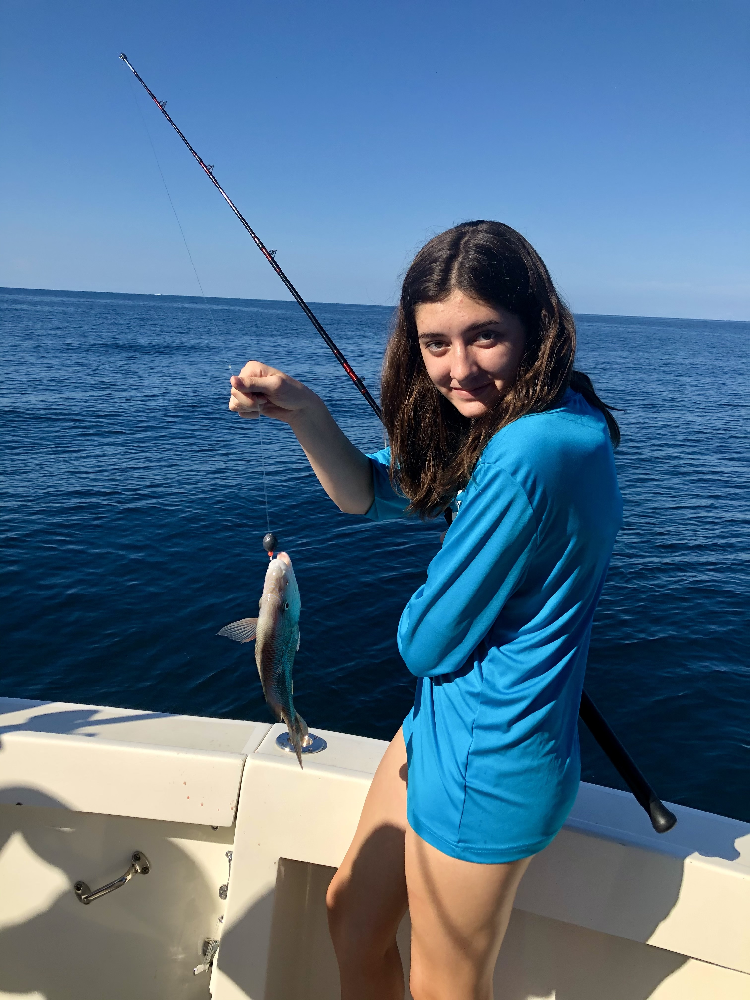
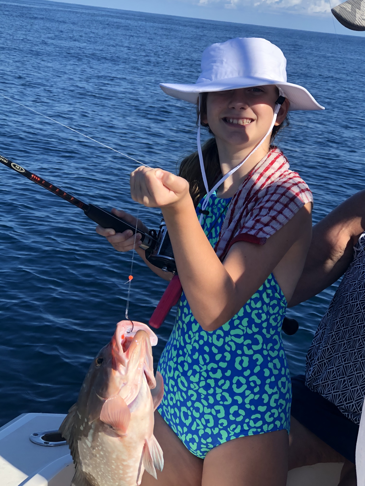

A beautiful and peaceful day on the water fishing is one of my favorite pass times. Fishing is a calm and therapeutic activity the whole family enjoys. It also fulfills the competitive itch, nothing better than reminding our co-partner how many fish you have pulled in the boat. I have also learned it is a great way to trap a teenager for a day! The social benefits of bonding and listening to the stories is almost, as if we were all sitting around a Thanksgiving table. Great place to enjoy the laughter and unless the kids are swimming, they are stuck with us!